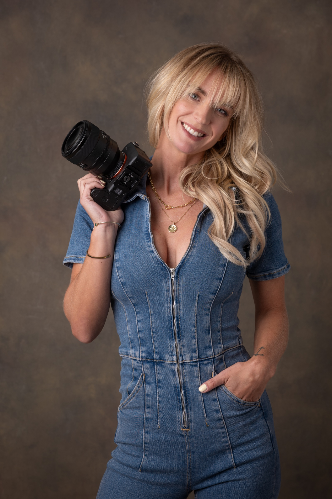
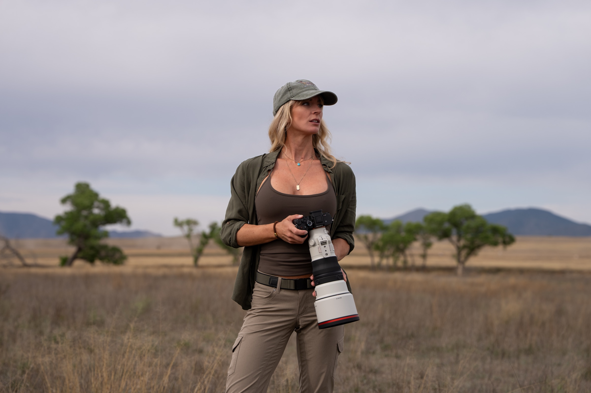
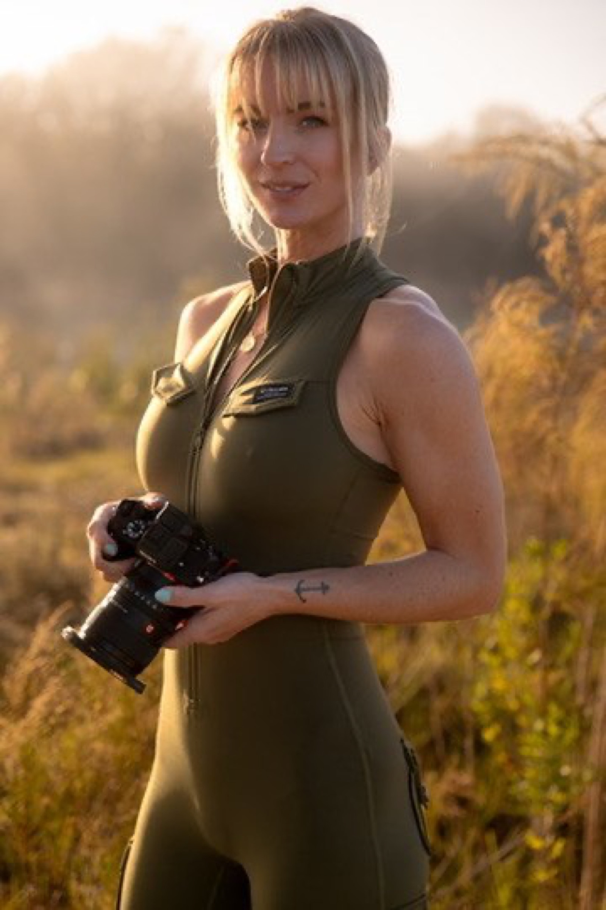
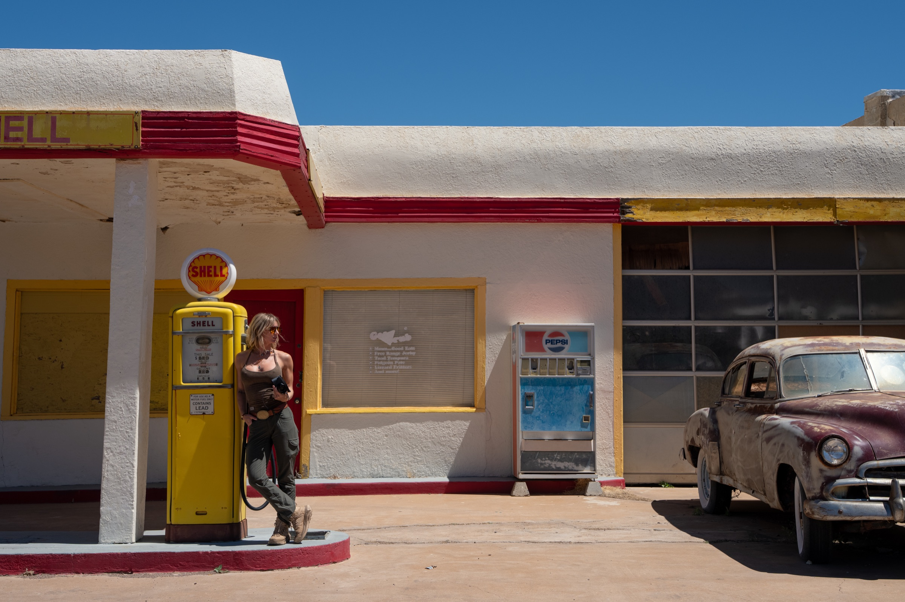
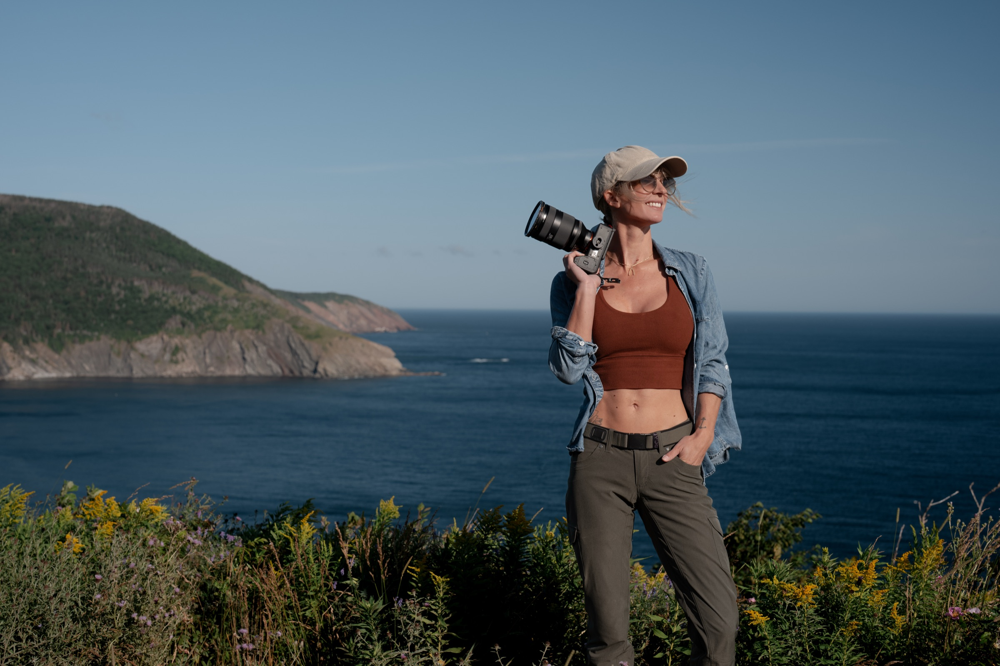
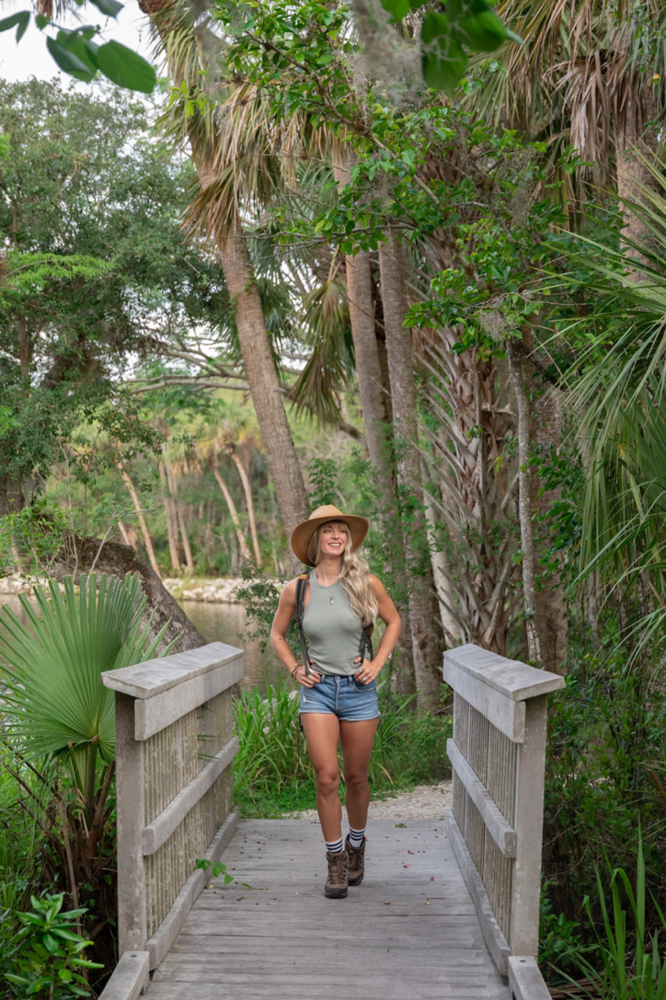
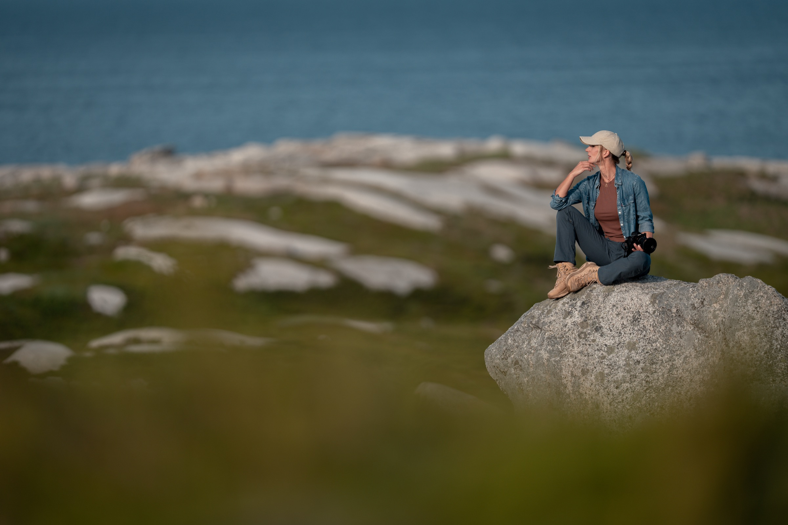

04‑16 · SOUTHERN ARIZONA · 300MM
By Yrsa — desert Southwest to the Maritimes.
SELECTED WORK · SHOT LOG

THE PHOTOGRAPHER
Behind the lens
04‑16 · SOUTHERN ARIZONA
Waiting on the light

04‑16 · SOUTHERN ARIZONA · 300MM
Desert horizon, lifted sky

04‑17 · SOUTHERN ARIZONA
Gold before the frost

04‑16 · BISBEE, AZ · 90MM
Oxide & rust

07‑18 · CABOT TRAIL, NS · 35MM
Green cliff, grey sea
07‑18 · CABOT TRAIL, NS
The road, patient

07‑02 · FLORIDA HAMMOCK
Palm shade, still water

07‑22 · PEGGY'S COVE, NS · 24MM
Granite line, breaking light
07‑03 · GULF COAST, FL · 50MM
Salt air, bare feet
ON THE MOVE · FIELD CLIPS
LATEST · @YRSACLICKS
NEW CLIP LOGGED SOON
NEW CLIP LOGGED SOON
JOIN THE LIST
One email per new region. No spam.
GET IN TOUCH
Prints, licensing, commissions — reach out and I'll follow up soon.
© 2026 YRSACLICKS · FIELD PHOTOGRAPHY